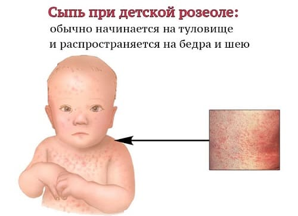

Очень «интересная» инфекция с удивительно характерными признаками. Вначале повышается температура тела и всё – т. е. всё остальное уже связано с высокой температурой – вялость, сонливость, отказ от еды. Но больше нет ничего – ни кашля, ни насморка, ни поноса, ни болей. И это неопределенное состояние продолжается около трех, иногда даже пяти дней, после чего температура очень быстро нормализуется, активный ребенок бегает по дому и просит поесть. Все домашние испытывают чувство глубокого удовлетворения в связи с выздоровлением от непонятной болезни, но через 10–20 часов после нормализации температуры, когда ребенок кажется абсолютно здоровым, по всему телу внезапно появляются элементы точечной или мелкопятнистой розовой сыпи. Состояние при этом не ухудшается, а сыпь сама исчезает через несколько дней (от 4 до 7). Это и есть розеола. Она не опасна, не дает осложнений, не требует лечения.

Розеола – уникальная болезнь!
Болезнь достаточно распространенная и в то же время болезнь, которой не существует, поскольку диагноз «внезапная экзантема» врачи не ставят почти никогда!
Дело в том, что за три-пять дней непонятного и необъяснимого повышения температуры тела очень немногие родители не успеют «всунуть» в дитя 3–4 лекарства. Неудивительно, что появление, в конце концов, сыпи и сами мамы-папы-бабы, а нередко и врачи, рассматривают как признак лекарственной аллергии. Вполне понятно, что назначаются дополнительно противоаллергические лекарства, которые и дают «эффект» в сроки, за которые сыпь обычно проходит сама (т. е. от 4 до 7 дней).
Е.О.Комаровский. "Здоровье ребенка"